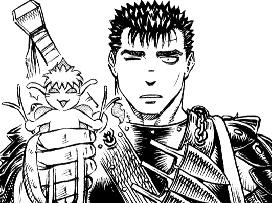

Puck
O Puckovi:
Moc o Puckovi není známo předtím, než narazil na Gutse, až na to, že pochází z Elfheimu, ale od té doby co na sebe narazili, tak drželi za jedno napříč vše, co spolu zažili. Souhrn Puckovi povahy by mohl být víceméně jakožto dětinský, komický a věrný.
